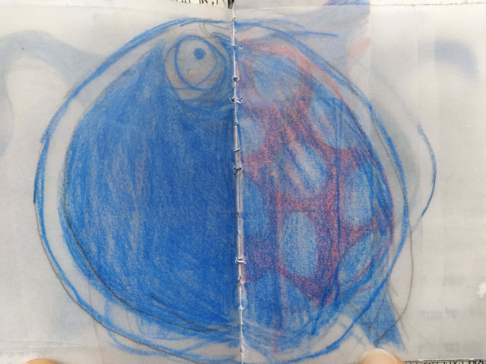
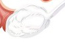
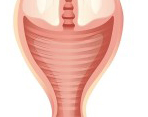
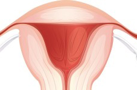

איזו אישה אינה זוכרת את היום המביך ההוא, אי שם בכתה ו׳, בו כינסה אחות בית הספר את בנות הכתה כדי לספר להן על מסתרי גופן ןעל עולם חדש ומופלא של טמפונים ותחבושות היגייניות שנפתח בפניהן? העניין העצוב הוא, שרובנו ככולנו יצאנו מאותה הרצאה עם מעט מאוד ידע על מה שבאמת מתרחש בגופנו. המשכנו לגדול ולהתפתח כשהמחזור החודשי כולו עוטה מסתורין ואפוף מיתוסים וחצאי אמיתות. את כולנו לימדו כי האירוע העיקרי במחזור החודשי הוא הדימום הווסתי, וכי הדבר החשוב ביותר הוא ללמוד כיצד משתמשים כהלכה בטמפונים ובתחבושות היגייניות. כך שאין זה מפתיע שגם אחרי שבילינו, במצטבר, שעות מול מדף מוצרי ה׳היגיינה הנשית׳ בחנויות הפארם, רובנו עדיין לא יודעות כמעט דבר על גופנו, אבל יכולות לזהות בקלות את ההבדלים בין טמפוני ׳מיני׳ ל׳סופר׳, או לספר בשבחי הכנפיים של התחתונית ולדון ביכולות הספיגה המשוכללת של כל אחד מהם. כאן נכנסת לתמונה המודעות לפוריות.
גישת המודעות לפוריות
יש בה כל כך הרבה מעבר להבנה בסיסית של ההיגיינה הנשית והדימום הווסתי. ביסודה,זוהי גישה המעודדת את האשה לקחת אחריות על המחזור החודשי שלה, להבין לעומק אותו ואת כל השפעותיו על הגוף ולנער ממנו את המיתוסים השגויים שדבקו בו. משום שמיניות, פוריות, לידה וגיל הבלות- כולם פנים שונות של הנשיות, ומעקב אחר סימני הפוריות ותיעודם מספק חלון הצצה אל כולם. הידע שיכולה אשה להשיג באמצעות שיטת המודעות לפוריות הוא בסיס רב-ערך לקבלת החלטות אישיות מסוגים שונים. והחשוב מכל, הוא מאפשר לנשים להבין את גופן ולסמוך על המידע שהוא מספק להן. רופאי הנשים מומחים בפיזיולוגיה של האשה, כך שהגיוני שנשים פונות אליהם כדי שיפרשו עבורן את הגוף שלהן. ההסתמכות על הרופאים הייתה מובנת אילו הידע על גוף האישה לא היה נגיש לכלל הציבור. אבל כאן מדובר בידע בסיסי על פוריות, לא בניתוחי מוח. למעשה, העניין אינו מסובך במיוחד, ובוודאי שאין צורך לעטוף אותו בהילה של מסתורין, כפי שקורה לעיתים.
האנטומיה של מערכת הרבייה הפנימית של האשה
הידעתם שחלק קטן מכל אחד מאיתנו שהה בעבר בתוך הרחם של סבתנו מצד האם? בשונה מעוברים ממין זכר, שבאשכיהם אין כלל זרע, בעובר ממין נקבה מצויות כבר כל הביציות שהיא עתידה לשחרר במהלך כל חייה הבוגרים. פירושו של דבר, שכאשר אמכם היתה עובר קטן ברחם סבתכם, כבר שכנה בתוכה הביצית שממנה נוצרתם אתם!חצוצרות: האיבר הגלילי שבו מתרחש המפגש בין הזרע לביצית ודרכו מטיילת הביצית מן השחלה אל הרחם.
- ביצית: הביציות הזעירות ממתינות בשחלה ומדי חודש משתחררת אחת מהן ויוצאת לדרכה אל הרחם. אם תפגוש זרע בדרכה תוכל להיווצר הפריה
- שחלות: בלוטות המין הנשיות העיקריות אצל האשה, שגודלן 3-5 ס״מ. עם לידתה, כבר מצויות כמיליון ביציות לא בשלות בשחלות התינוקת שזה עתה נולדה. השחלות מייצרות ומפרישות אסטרוגן ופרוגסטרון לכל אורך נשות הפוריות של האשה. בכל מחזור, מתפתחים בשחלות זקיקים: צברי תאים המקיפים את הביצית המבשילה לקראת הביוץ.
 צוואר הרחם:
הפתח התחתון של הרחם. זהו החלק היחיד של הרחם שאותו ניתן למשש מבחוץ, משום שהוא בולט אל תוך חלקו העליון של הנרתיק. לאורכו של צוואר הרחם עוברות תעלות, המפיקות את נוזל צוואר הרחם הפורה, והוא אשר מאפשר את קיומו של הזרע בתוך גוף האשה.
צוואר הרחם:
הפתח התחתון של הרחם. זהו החלק היחיד של הרחם שאותו ניתן למשש מבחוץ, משום שהוא בולט אל תוך חלקו העליון של הנרתיק. לאורכו של צוואר הרחם עוברות תעלות, המפיקות את נוזל צוואר הרחם הפורה, והוא אשר מאפשר את קיומו של הזרע בתוך גוף האשה. פתח צוואר הרחם:
הפתח הזעיר, בקצה צוואר הרחם, אשר הולך וגדל לקראת מועד הביוץ (בסדרת הכתבות הבאה הוא יכונה ״קצה צוואר הרחם״), ואשר מתרחב עד כדי 10 ס״מ בעת הלידה, כדי לאפשר את מעבר התינוק.
פתח צוואר הרחם:
הפתח הזעיר, בקצה צוואר הרחם, אשר הולך וגדל לקראת מועד הביוץ (בסדרת הכתבות הבאה הוא יכונה ״קצה צוואר הרחם״), ואשר מתרחב עד כדי 10 ס״מ בעת הלידה, כדי לאפשר את מעבר התינוק.- נרתיק: איבר אלסטי שרירי באורך 10-15 ס״מ, המשמש מעבר בין פתחו של איבר המין לבין צוואר הרחם, ואזור שדרכו זורם דם הווסת המגיע מהרחם. בשעת התעוררות מינית, מתרחב הנרתיק כהכנה לחדירתו של איבר המין הזכרי. בעת הלידה, הוא נמתח והופך לתעלת הלידה, דרכה מגיח התינוק לאוויר העולם.
- רירית הרחם: ריפוד דפנות הרחם, הנבנה מידי חודש כהכנה לקליטת הריון, ואם זה אינו מתרחש, הוא מתפרק ויוצא החוצה בדימום הווסתי.
- רחם: איבר שרירי, חלול, בצורת אגס (ובערך בגודל של לימון קטן) אשר בונה ומפרק ריפוד עשיר בדם מידי חודש, ומשמש חממה לעובר המתפתח במקרה שמתרחשת הפריה והשתרשות. אצל מרבית הנשים, נוטה הרחם קדימה (רחם קדמי) ואצל מיעוטן- אחורה (רחם אחורי).
מערכת הרבייה זה לא רק נרתיק
אחד ההבדלים המשמעותיים בין מערכת הרבייה הנשית לזו הגברית, הוא זמן התפתחות של תאי המין (גמטא או תא זיווג). כפי שהזכרנו, הנשים נולדות כשכבר מצויות בגופן כל הביציות שאי פעם תהיינה להן. הביציות מתחילות להשתחרר לקראת גיל ההתבגרות וממשיכות להשתחרר בדרך כלל אחת לחודש עד גיל הבלות. אצל גברים לעומת זאת, הזרע אינו מתפתח לפני גיל ההתבגרות. אולם מרגע שהגוף מתחיל לייצר תאי זרע הוא יכול להמשיך לעשות זאת עד המוות. הטבלה שלהלן מסכמת את ההבדלים העיקריים בין בפוריות בין נשים לגברים:
נשים:
גברים:
הבדלים האנטומיים בין גברים לנשים משפיעים על האופן שבו נשים וגברים חווים את המיניות שלהם. דבר זה נראה לכאורה מובן מאליו, ואולם ההבדלים בתחום זה כה רבים וחלקם דקים (עד שהקדשתי את מרבית פרק 16 לדיון בנושא), ואחד מהם ראוי לאזכור במיוחד: אורגזמות. נשים מגיעות לאורגזמה באופן שונה מגברים, משום שהן פשוט לא בנויות כמותם. העצבים הרגישים ביותר של הגבר מצויים מתחת לקצה הפין, בדיוק באיזור שזוכה למירב הגירוי בעת החדירה. לפיכך, לגברים קל יחסית להגיע לאורגזמה כתוצאה מחדירה. אצל נשים לעומת זאת, האזור הרגיש ביותר הוא הדגדגן, המצוי מחוץ לנרתיק, בדיוק מעליו. לפיכך, במהלך משגל בתנוחה המיסיונרית- כשבני הזוג שוכבים פנים אל פנים, הגבר יכול להתענג עד אבדן חושים בשעה שהאשה יכולה לעסוק בהכנת רשימת הקניות למחר (אולי להשמיט חלק זה אביה ???????????????????) כמובן שתחושת המשגל עצמו נפלאה למרבית הנשים, ולאותן 30% בנות מזל שמצליחות להגיע לאורגזמה מחדירה, עשויה החוויה להיות מענגת מאוד. אך העניין הוא שנשים בנויות אחרת מגברים, חד וחלק. הדרך הציורית ביותר להבהיר את ההבדל היא לתאר כיצד מתפתחים איברי המין של העובר ברחם אימו. לפני שהעובר מתפתח, והופך לבן או לבת, אותם תאים שיהיו לראש הפין בעובר ממין זכר הופכים לדגדגן בעובר ממין נקבה, והתאים שאצל הבן יהיו לשק האשכים, אצל הבת הופכים לפות. ואולי הדרך הטובה ביותר להמחיש לגברים את תחושותיה של האשה, היא לשאול אותםת האם הם יכולים להגיע לאורגזמה אך ורק באמצעות ליטוף של שק האשכים? ייתכן שכן, וייתכן שלא. או שאולי כן, אבל אחרי, נניח, שעתיים של ליטופים כאלה. ולמרות זאת, גברים ונשים כאחד מרגישים תסכול כאשר האשה אינה מגיעה לאורגזמה באותה קלות שהגבר מגיע אליה. אילו יכולתם להיות זבוב על הקיר בחדרי שינה בכל רחבי העולם, אני חושבת שהייתם משועשעים לגלות כמה הרבה נשים מאשימות את בן זוגן ב״ביצועים כושלים״ שאינם מאפשרים להם הגיע לאורגזמה במהלך חדירה. במקביל, מאשימים גברים את בנות זוגן בכך ש״אינן מיניות מספיק״ ואינן מגיעות לאורגזמה. כמובן שהאשמות כאלה גורמות למתחים רבים בזוגיות. סקס בין גברים לנשיםעשוי להיות חוויה חושנית, מענגת ומספקת מאין כמוה, אם כל צד לומד להכיר את גופו ואת צרכיו של הצד האחר. כדי לענג את הצד האחר, כל אחד מבני הזוג צריך להיות מוכן לשאול שאלות ולהפתח בפני האחר, גם אם הוא מציב כך את עצמו בעמדה פגיעה.